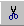

- Дважды щелкните ячейку, содержимое которой
нужно изменить.
- В ячейке выделите символы, которые следует
переместить или скопировать.
- Чтобы переместить символы, щелкните кнопку Вырезать
. Чтобы скопировать
символы, щелкните кнопку Копировать
 .
.
- Укажите в ячейке место, в которое следует
поместить символы.
- Щелкните кнопку Вставить
 .
.
- Нажмите клавишу ENTER.
Назад | Содержание | Вперед